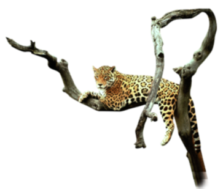
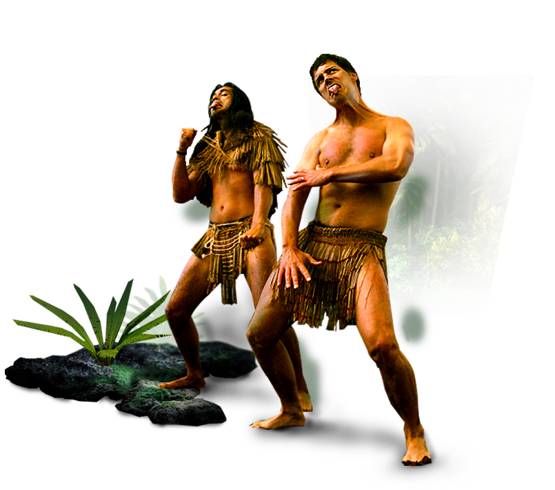
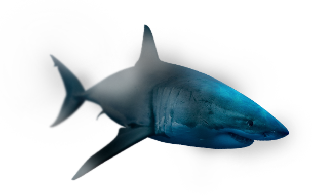
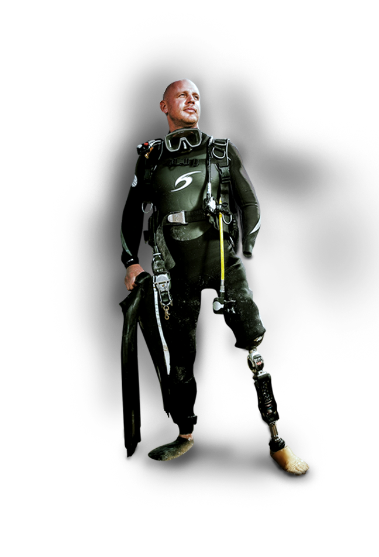
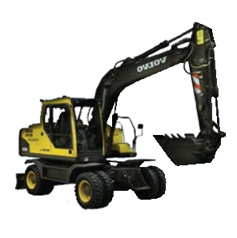
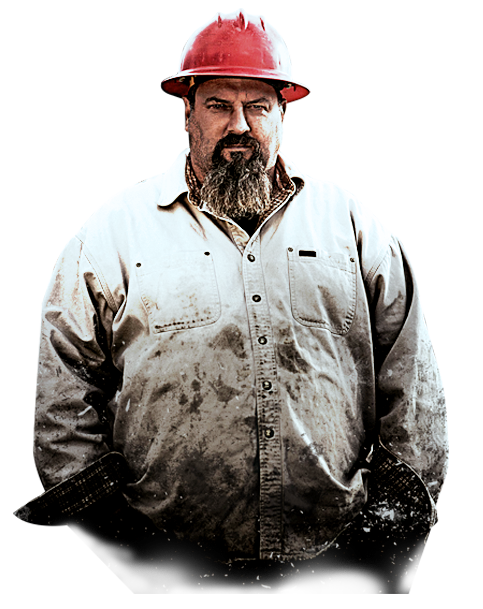
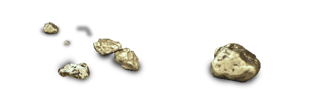
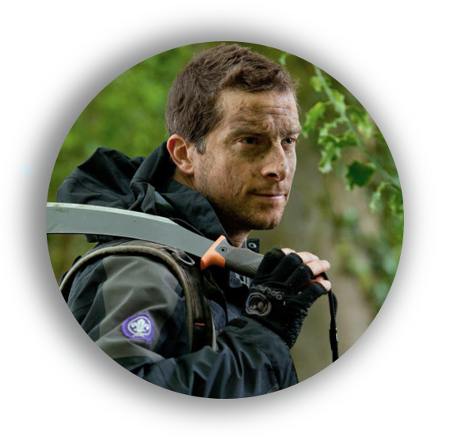
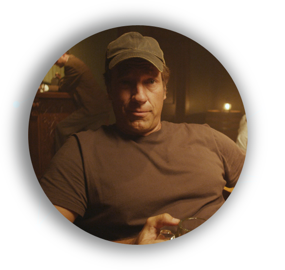
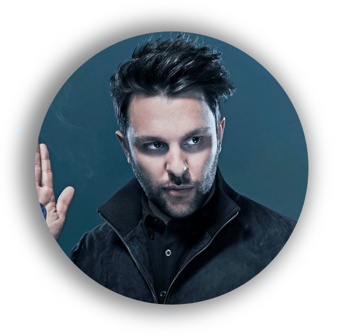

How The Universe Works는 디스커버리 채널에서 방송 된 우주 작용에 관한 미니 시리즈
2010년 디스커버리 채널에 의해 방송 된 프로그램이며, 우주가 어떻게 시작되었는지와 종료
하는 방법 등을 알고 싶어하는 스티븐 호킹과 미치오 카쿠를 중심으로 진행하는 시리즈이다.


코스타리아 정글 체험 리얼리티
한명의 남자와 한명의 여자가 아무것도 걸치지 않은 채 21일간 코스타리아 정글에서
살아남는 과정을 그린 국내에서는 영국판 정글의 법칙이라는 불리는 프로그램이다.


상어 다큐멘터리
샤크위크는 1987년 7월 17일 첫방송 이후 현재까지 방송되고 있는 상어 주제의
프로그램이다. 매년7월 또는 8월에 방송 되는 이 프로그램은 다큐멘터리, 이벤트
등 다양한 컨텐츠를 방송하며,궁극적으로는 상어 보호와 생태계 존중에 대한 의식
고취를 목적으로 하는 프로그램이다.



황금캐기 리얼리티 프로그램
미국 알라스카에서 사금광 개발하는 과정을 다큐멘터리. 사금광 개발 과정의
어려움과 인간적인 갈등 등의 내용을 다루며, 리얼리티로 진행하는 프로그램.
새로운 영역을 개척하고 그들은 신속하게 금 수백만 달러를 찾기 위해 자신의
지속적인 탐구에 더 많이 고민한다.
MOONSHINERS
Man vs Wild는 100% 생존을 위한 비법이다. 지상 최대 위험 지역에서의 생족 방법을
영국 특수부대(SAS)출신의 베어 그릴스가 알려준다. 부싯돌과 칼과 물통 하나만을 지닌채 오지에서 살아
남는, 일종의 서바이벌 다큐멘터리다.
인간과 자연의 대결
Man vs Wild는 100% 생존을 위한 비법이다. 지상 최대 위험 지역
에서의 생족 방법을 영국 특수부대(SAS)출신의 베어 그릴스가 알려
준다. 부싯돌과 칼과 물통 하나만을 지닌채 오지에서 살아남는, 일종
의 서바이벌 다큐멘터리다.
인간과 자연의 대결
Man vs Wild는 100% 생존을 위한 비법이다. 지상 최대 위험 지역에서의 생족 방법을
영국 특수부대(SAS)출신의 베어 그릴스가 알려준다. 부싯돌과 칼과 물통 하나만을 지닌채 오지에서 살아
남는, 일종의 서바이벌 다큐멘터리다.
인간과 자연의 대결
Man vs Wild는 100% 생존을 위한 비법이다. 지상 최대 위험 지역에서의 생족 방법을
영국 특수부대(SAS)출신의 베어 그릴스가 알려준다. 부싯돌과 칼과 물통 하나만을 지닌채 오지에서 살아
남는, 일종의 서바이벌 다큐멘터리다.
디스커버리 채널에서 인기를 얻고 있는 인물들을 소개합니다.

에드워드 마이클 그릴스
디스커버리 채널(Discovery Channel)에서 방영하는 인간과 자연의 대결(Man vs. Wild)과
최악의 시나리오(Worst-Case Scenario)에 출연하였다.

마이크 로우
마이크 로우는 디스커버리 채널의 시리즈 Dirty Jobs의 제작자 및 프로듀서로,
마이크는 대부분의 사람들이 피하길 원하는 200개 이상의 직업에 도전하며 여러 국가를 돌아다녔다.

벤 얼 해리
어릴 때부터 장난과 손 기술의 전례없는 속임수와 결합을 할 수 있는 특별한 재능을 가진 벤은
자신에게 놀라운 도전을 설정해 범죄, 예술, 돈과 과학의 주제에 전념해 놀라운 스페셜 프로그램을 제공한다.